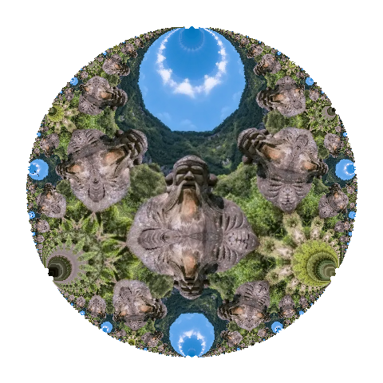

Expert-on-demand services
Scholar-in-residence program
This consultancy company currently consists of Dr. Y.K. Tai and Dr. Harold Chao, who were previously from an AI team of data scientists and developers that empower client to co-create industrial products and semi-automated DevOps pipelines. Now, our mission is to deliver expert consultancy services across the fields of artificial intelligence, education, eco-environment protection and business. We aim to enhance professional development and organizational growth through innovative initiatives. Recently, we also serve as a liaison within the Hong Kong Special Administrative Region (HKSAR) for a leading ESG company in the Greater Bay Area (GBA).
|
Expert-on-demand services |

Scholar-in-residence program |